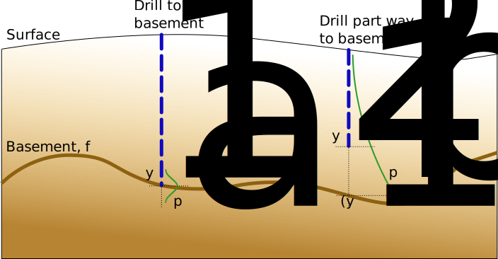

UncoverML Project Report (NICTA)¶
This page contains a brief report of the work completed by NICTA (now Data61) on some of the aspects of UncoverML not covered by the documentation.
Contents
Revrand - large-scale approximate Gaussian processes¶
The main algorithm used from revrand is the standard linear model for regression. The aim is to learn a function that maps input covariate values, \(\mathbf{x}_n \in \mathbb{R}^d\), to target values, \(y_n \in \mathbb{R}\). That is, learn \(f\) such that \(y_n = f(\mathbf{x}_n) + \epsilon\), where \(\epsilon\) is random (Gaussian) noise. The standard linear model represents \(f\) as a linear combination of (non-linear) basis functions, \(f(\mathbf{x}_n) = \phi(\mathbf{x}_n, \theta)^\top \mathbf{w}\), where \(\phi: d \to D\), with weights \(\mathbf{w} \in \mathbb{R}^D\). The exact form of the model implemented in revrand is,
We then maximise the log marginal likelihood of the model to learn the parameters \(\sigma^2, \lambda\) and \(\theta\) from the data (without over fitting). We can then solve for the posterior over the weights,
The predictive distribution given a query point, \(\mathbf{x}^*\) is,
This model can learn from large datasets, unlike a Gaussian process, which needs to invert a matrix the dimension of the learning dataset. A Gaussian process is in general more flexible than the above model, as it specifies a prior directly over functions as opposed to weights (\(\mathbf{f} \sim \mathcal{N}(\mathbf{0}, \mathbf{K})\), where \(\mathbf{K}\) is a kernel matrix). However, the trick implemented in revrand is that by choosing special types of basis functions (\(\phi(\cdot)\)) we can approximate the behaviour of Gaussian processes. See 1 and 2 for more information.
We can also use this model to estimate the expected reduction in entropy of the posterior distribution over the weights from incorporating a query point into the model,
This will tell us where to take future measurements to maximally reduce the model uncertainty. It is worth noting that this quantity is very similar to the predictive variance.
Heterogeneous drill observations¶
While we did not have time to implement an algorithm to use heterogeneous drill holes types, i.e. those that do and do not hit the basement, we did establish a model for incorporating these observations. The basis for this model is a conditional likelihood model that changes the distribution used depending on the type of drill hole.
The purpose of a likelihood model is to model the process arising from measurement error, that is, what is the probability of a measurement given the true value? In this instance the true value is the depth of the basement, \(f_n\), at a point \(n\), we then acquire a noisy measurement of this basement from our drill-rig, \(y_n\). The likelihood model then describes the probability \(p(y_n | f_n)\).
In this situation we have effectively two different methods of acquiring measurements, direct observations of the basement layer, and a depth that we know the basement must lie below. Hence, we need different likelihood models for each of these “sensors”. For the first, where the drill has hit basement, we can simply use a Gaussian measurement error model. For the second, we know that there is non-zero probability of the drill encountering basement between the ground, and the basement. We don’t know the reason for stopping the drilling before the basement, and so we can put a uniform distribution on this measurement between the surface and the basement. However we know that we are unlikely to drill past the basement (otherwise this is the first type of measurement), and so we put a steep Gaussian falloff after the basement layer, as we have depicted in the following image
The formulation of the actual likelihood and prior is as follows, recall \(f_n := f(\mathbf{x}_n) = \phi(\mathbf{x}_n)^\top \mathbf{w}\),
Here \(z_n\) is an indicator variable that is 1 if an observation has hit the basement, and so uses a Gaussian measurement error model, or 0 if the basement was not hit, and so uses a piecewise modified uniform measurement model,
The first condition models the case where the observation occurs above the basement (most likely scenario). The second condition models the case where the basement is above the measurement, which is very unlikely. The third condition models the case where the basement is above the surface and our observation is below the surface. Again this condition is very unlikely, but it is included in the likelihood mainly as a way to constrain inference of \(f_n\) to be below the surface and below \(y_n\). Here \(l\) is a scale parameter which is set a-priori to penalise the model for placing the basement above observations that do not impact the basement.
Inference in this model is more difficult than in the standard linear model, however there is an implementation of a generalised linear model in revrand, that can be easily extended to use this compound likelihood.
References¶
- 1
Yang, Z., Smola, A. J., Song, L., & Wilson, A. G. “A la Carte – Learning Fast Kernels”. Proceedings of the Eighteenth International Conference on Artificial Intelligence and Statistics, pp. 1098-1106, 2015.
- 2
Rasmussen, C. E., & Williams, C. K. I. “Gaussian Processes for Machine Learning”, MIT Press, 2006.
- 3
Rahimi, A., & Recht, B. “Random features for large-scale kernel machines.” Advances in neural information processing systems. 2007.
- 4
Gershman, S., Hoffman, M., & Blei, D. “Nonparametric variational inference”. arXiv preprint arXiv:1206.4665 (2012).